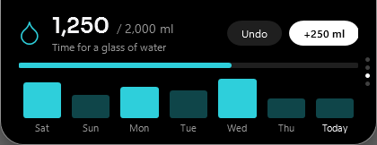

Agents in the notchAgent di notch
Claude Code, Codex and Gemini CLI report progress and ask for permission here. Builds and CI too.Claude Code, Codex, dan Gemini CLI melapor progres dan minta izin di sini. Build dan CI juga.

Your AI agents, builds, music and day, at the top of the screen. Pick only what you want; the rest stays out of the way.Agent AI, build, musik, dan harimu di puncak layar. Pilih yang kamu mau saja; sisanya tidak mengganggu.
Free · Windows 10 (1809+) and 11 · x64 · no accountGratis · Windows 10 (1809+) dan 11 · x64 · tanpa akunClaude Code, Codex and Gemini CLI report progress and ask for permission here. Builds and CI too.Claude Code, Codex, dan Gemini CLI melapor progres dan minta izin di sini. Build dan CI juga.
Weather, the next meeting, prayer times, water and reminders. Tap a row for more.Cuaca, rapat berikutnya, jadwal sholat, air, dan pengingat. Ketuk baris untuk detail.

A daily goal, one click per glass, the last seven days, and a gentle nudge.Target harian, satu klik per gelas, tujuh hari terakhir, dan pengingat lembut.

Pomodoro, countdowns and alarms. During focus, agent results wait for the break.Pomodoro, hitung mundur, dan alarm. Saat fokus, hasil agent menunggu istirahat.

Volume, brightness, battery, Caps Lock, keyboard language, the internet dropping, and a dot when your mic or camera is on.Volume, kecerahan, baterai, Caps Lock, bahasa keyboard, internet putus, dan titik saat mic atau kamera menyala.
/review /translate /remind 15m /water /mute and your own templates./review /translate /remind 15m /water /mute dan template buatanmu.

Also: music with synced lyrics you can click, clipboard history, a file shelf, the daily recap, a system page and a quiet companion. Every one is optional.Juga: musik dengan lirik yang bisa diklik, riwayat clipboard, rak file, rekap harian, halaman sistem, dan teman diam. Semuanya opsional.
The installer isn't code-signed yet. Click More info, then Run anyway. Each release lists its SHA-256 so you can check the file.Installer belum bertanda tangan kode. Klik More info, lalu Run anyway. Setiap rilis mencantumkan SHA-256 untuk mengecek file.
Claude Code or Codex with your subscription, or an Anthropic, OpenAI or OpenRouter key. TheAI walks you through it.Claude Code atau Codex dengan langgananmu, atau key Anthropic, OpenAI, atau OpenRouter. TheAI memandumu.
It's free. If that ever changes, it will be announced here and in the release notes first, and copies already downloaded keep working.Gratis. Kalau suatu saat berubah, akan diumumkan dulu di sini dan di catatan rilis, dan salinan yang sudah diunduh tetap berfungsi.
Install TheAI over it. Settings, conversations and keys move over on the first start.Pasang TheAI di atasnya. Pengaturan, percakapan, dan key pindah saat pertama dibuka.
Installs for your user only, no administrator rights. Or run the portable zip.Terpasang untuk akunmu saja, tanpa hak administrator. Atau jalankan versi portable.